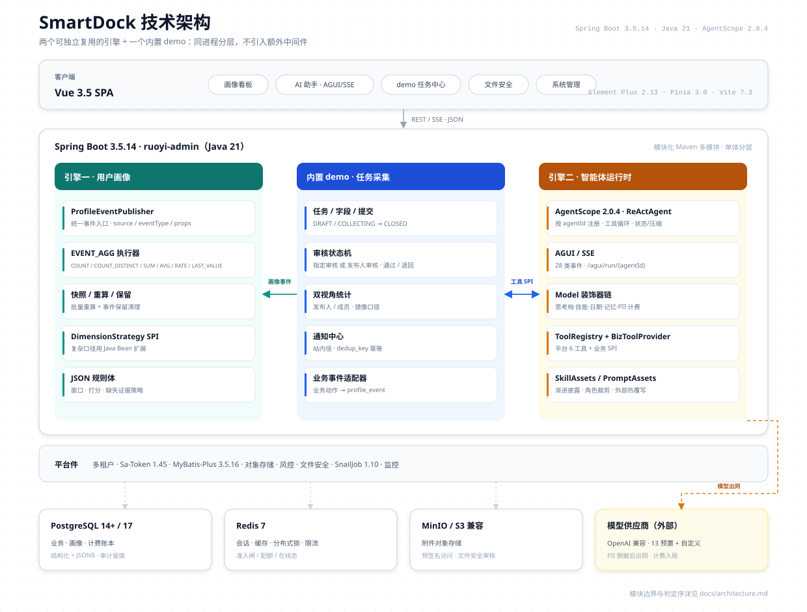
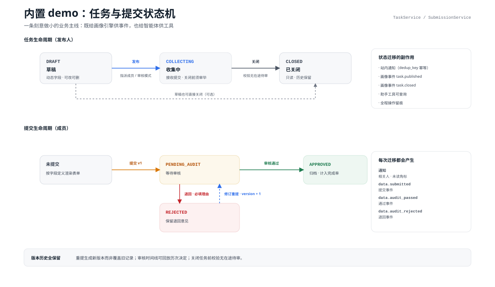
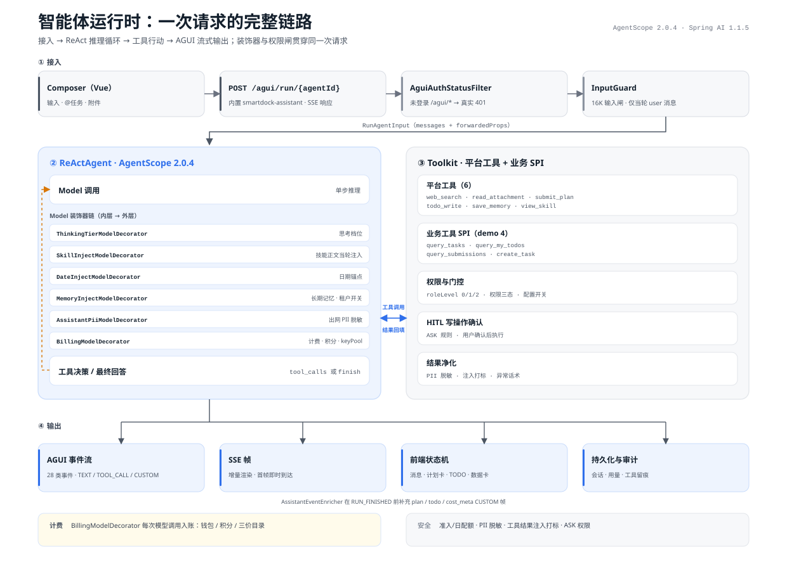
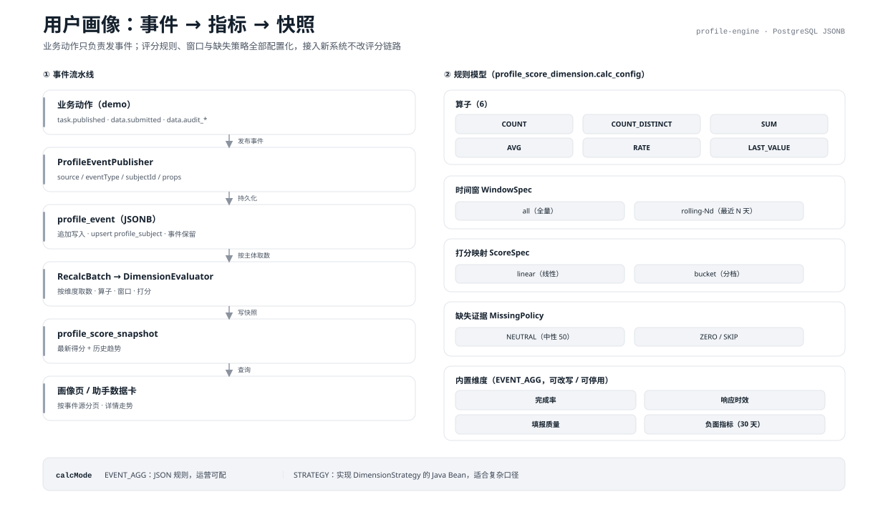

SmartDock · 架构图册
架构与流程图的完整尺寸版本。Gitee 上的 Markdown 正文宽度有限，图会缩到看不清细节——点任意一张在这里按原始尺寸查看，可放大到 200%。
← 回到 README · 后端开发手册 · 前端开发手册

1240 × 940 · 分层与依赖方向
两个可独立复用的引擎 + 一个内置 demo，同进程分层，不引入额外中间件。

1240 × 720 · 任务生命周期
一条刻意做小的业务主线：既给画像引擎供事件，也给智能体供工具。

1240 × 890 · 一次请求全程
从输入框到模型回复：鉴权、装配、工具循环、流式回传各自在哪一层。

1240 × 730 · 事件到快照
业务动作只负责发事件；评分规则、窗口与缺失策略全部配置化，接入新系统不改评分链路。